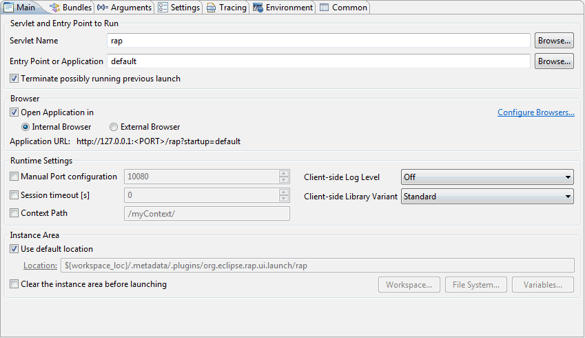
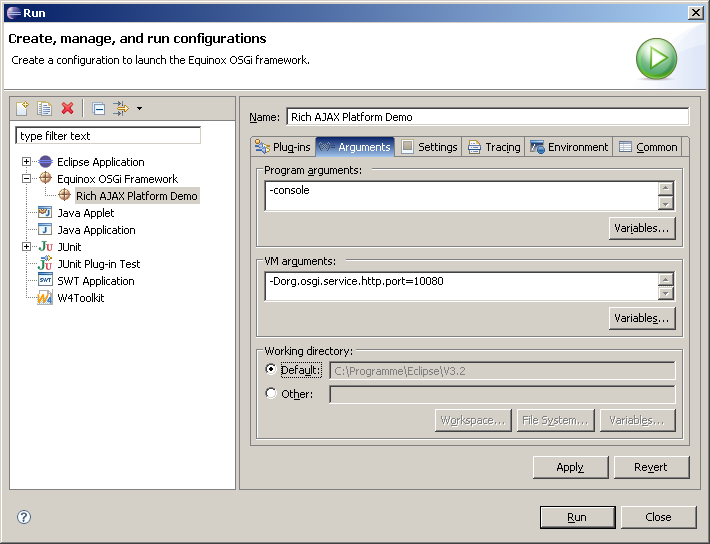

To start your RAP application, select Open Run Dialog... from the Run menu. You need to create a New Launch configuration. You can either use the RAP Launcher or the Equinox Launcher.
Regardless which way to launch you choose ensure that the following plug-ins are activated:
Currently it is not possible to specify a web.xml to be used
by the servlet engine. Some of the settings that usually would be specified
in the web.xml, can be passed to the Equinox HTTP Servlet via
system properties.
Probably most notable is the session timeout
(-Dorg.eclipse.equinox.http.jetty.context.sessioninactiveinterval=<timeout in Seconds>)
By default, the session timeout is zero, which means that the session never
expires.
-Dorg.eclipse.equinox.http.jetty.log.stderr.threshold=<log leve>
to the launch configuration. Valid log levels are debug,
info, warn, error, and off.
The default value is warn.
The RAP Launcher is based on the OSGi Launcher and adds a Main tab page to it. Please note, that the RAP Launcher only works when the Equinox OSGi Framework is selected, which is the default setting on page Bundles.
Within this group you need to choose the combination of servlet name and entry point you would like to run.
Please note that the selection dialogs opened when pressing the Browse... buttons list all servlet names/entry points available in the workspace. Thus you have to ensure that the bundle that provides the servlet name/entry point you selected is contained in the selection on page Bundles.
When the Terminate possible running previous launch option is selected, an eventually running launch with the same name will be terminated before lauching. This might come in handy when frequently changing code and restarting the application.
It is recommended to let the launcher dynamically choose a free port for client-server communication. However if you would like to have full control over the communication channel, you can explicity specify a port number.
This setting controls to which extent log messages from the client-side JavaScript library are written. All settings other than Off may open a browser pop-up window.
RAP comes with two flavors of qooxdoo, the client-side JavaScript library. The Standard version is optimized for speed and size, whereas the Debug version should be used when developing with RAP, especially custom widgets.
To launch a once created launch configuration you may use the
launch shortcut keys Alt+Shift+X+R (run) and
Alt+Shift+D+R (debug).
For Max OS X systems, please add -Djava.awt.headless=true to your VM arguments.
To run the demo, select Run > Run... from the main menu. In the upcoming Launch Configuration Dialog, select Rich Ajax Platform Demo from the section Equinox OSGi Framework.
You may want to configure the TCP-port your demo application will listen to. This is done opening the Arguments page and changing the -Dorg.osgi.service.http.port=9090 VM argument, to a (arbitrarily chosen) port your application will listen to. This is particularly important if the default port 9090 is already taken by some other application.
To actually start your application, click the Run button.
The correct startup should display in the Eclipse Console through a message
saying INFO: Started SocketListener on
0.0.0.0:<port>. If an error shows up, please make sure all other
instances are stopped and then retry with another port.
Now that the RAP application is running, you can access it using any browser. Please enter the URL http://localhost:<port>/rap?startup=<entrypoint>. Where <entrypoint> specifies the name of the IEntryPoint implementation that you would like to start.